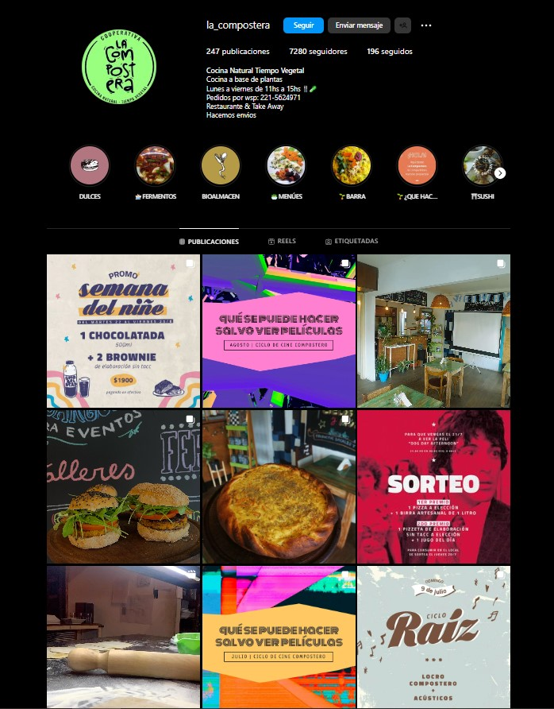

Es pionera en la ciudad. Una cooperativa de trabajo dedicada a la alimentación naturista y consciente fundada en 2015. En actualidad está está funcionando como despacho, como take away, donde la gente pasa a retirar su comida, en su tupper. El fuerte es la propuesta de menú para los almuerzos: milanesas de vegetales, tabulés de legumbres, crepes, rissotos, etc. Para quienes no les gusta cocina, o bien no tienen tiempo de hacerlo, hay una promo con un abono mensual: 20 viandas mensuales que se prepara día a día e incluye 2 tuppers de uso exclusivo del cliente para evitar la generación de basura. El delivery está incluido. Por otro lado, en La Compostera vas a encontrar pastelería vegana (alfajores, tortas, brownies, galletitas) que también es sin tacc.
